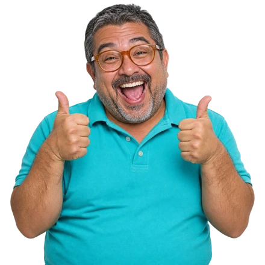

Dettagli delle immagini originali del manuale. Il gancio ora riguarda Colorize Mask, la funzione effettivamente mostrata. Nessuna prova eseguita da noi in Krita.
Krita Manual contributors (Wolthera van Hövell tot Westerflier, Vancemoss, Raghavendra Kamath) · GFDL 1.3+ indicata nel sorgente della pagina; il sito descrive anche CC BY-SA per la documentazione
Schermata autentica darktable 4.4.2 (2023). Dettaglio della tavola luminosa. Non è un prima/dopo e non dimostra che lo stesso stile sia stato applicato a tutte le immagini.
สาริศ ธนาโสภณ / T.saris, Wikimedia Commons · CC BY-SA 4.0
Dettaglio della schermata nel manuale ufficiale. Collegamento tra schermate di un prototipo musicale. Non è un sito funzionante né una prova eseguita da noi.
Penpot documentation contributors · Repository penpot/penpot-docs: MPL 2.0; nessun avviso separato rilevato per questa immagine
Disegna schermate e collega le interazioni per far provare un percorso prima dello sviluppo.
01 / DUE DRITTE
SCOPRI DOVE CI SI BLOCCA
Fai provare una prenotazione.
02 / DUE DRITTE
CORREGGI UNA VOLTA SOLA
Aggiorna i componenti collegati.
QUINDI POSSO CLICCARE?!
PRIMA DI PARTIREIl risultato è un prototipo, non un sito operativo. Configura le interazioni e i componenti. Il servizio cloud ha anche piani a pagamento.
Modello e render realmente prodotti in Blender 5.2.1. Stesso modello, stessa camera; passaggio da vista Workbench a render EEVEE. Script tools/demo_blender.py e file .blend conservati.
SPRITE TOOLMAG · ESPORTAZIONE REALE IN LIBRESPRITE 1.3
IMMAGINE: PROVENIENZA E LIMITI
Dimostrazione originale TOOLMAG. Quattro pose originali importate in LibreSprite 1.3 e realmente esportate in un file .ase e uno sprite sheet. Le pose sono disegnate, non create automaticamente. La pagina della rivista qui mostrata è aggiornata solo nella demo; il carosello originale resta archiviato.
TOOLMAG · Artwork originale TOOLMAG, utilizzato sul proprio sito
Trasforma i tuoi glifi in un font installabile e cura gli spazi tra le lettere.
01 / DUE DRITTE
DAI UNA VOCE AL MARCHIO
Trasforma il lettering in un font.
02 / DUE DRITTE
EVITA I BUCHI TRA LETTERE
Regola gli spazi prima di esportare.
ORA SCRIVO COME MI PARE!
PRIMA DI PARTIREDisegna o importa i glifi, assegna i caratteri, regola la spaziatura ed esporta. Per modificare font altrui serve una licenza adeguata.
Schermata di impaginazione e pagina finale del Quick Start Guide. Estratto e composizione grafica modificata da Toolmag il 2026-11-08. Originale disponibile nel repository Scribus; non implica approvazione degli autori.
Scribus Team e autori della documentazione; dipinto di Rembrandt · Open Publication License 1.0+, con divieto opzionale di edizione in libro cartaceo senza permesso
Impagina le tue opere in una fanzine e raccogli i file collegati per la consegna.
01 / DUE DRITTE
PORTA LE OPERE SU CARTA
Esporta il PDF per la tipografia.
02 / DUE DRITTE
CONSEGNA SENZA FILE PERSI
Raccogli progetto e immagini usate.
FERMATE LE ROTATIVE!!!!
PRIMA DI PARTIREConcorda PDF, colori e abbondanze con la tipografia. Trasferisci i font solo se la licenza lo permette. Il codice principale è ospitato su SVN: svn://scribus.net/trunk/Scribus.
Dialogo originale Loudness Normalization dal manuale. È il controllo reale, non una misura prima/dopo. -23 LUFS è il valore mostrato dalla fonte, non una raccomandazione universale per i social.
Rendi più uniforme il volume percepito di registrazioni diverse e riusa gli effetti con le macro.
01 / DUE DRITTE
EVITA SALTI DI VOLUME
Uniforma il volume delle clip audio.
02 / DUE DRITTE
NON RIPETERE GLI EFFETTI
Applica una macro a più file audio.
LE ORECCHIE RINGRAZIANO!
PRIMA DI PARTIRELavora sull’audio. Usa la normalizzazione loudness con un obiettivo comune; normalizzare i picchi non equivale a uniformare il volume percepito. Per alcuni formati serve FFmpeg. Riascolta: non ripara il clipping.
Due dettagli originali del tutorial Meshroom for Beginners. Stessa statua: fotografie e ricostruzione texturizzata. Non è una scansione eseguita da noi.
AliceVision / Meshroom Manual contributors · CC BY-SA 4.0 (manuale)
Ricostruisci oggetti da molte fotografie per archiviare opere o riutilizzarle nelle scene 3D.
01 / DUE DRITTE
ARCHIVIA PRIMA DI CONSEGNARE
Crea un archivio 3D delle tue opere.
02 / DUE DRITTE
RIUSA OGGETTI REALI NEI SET
Scansionali e rifinisci il modello 3D.
ANCHE LA STATUA È NEL PC?!

PRIMA DI PARTIREServono foto sovrapposte da più angolazioni e superfici adatte. Il percorso denso standard usa NVIDIA CUDA; AliceVision è incluso nei pacchetti ufficiali. Il modello può richiedere pulizia. Una scansione non sostituisce un archivio fotografico di conservazione.